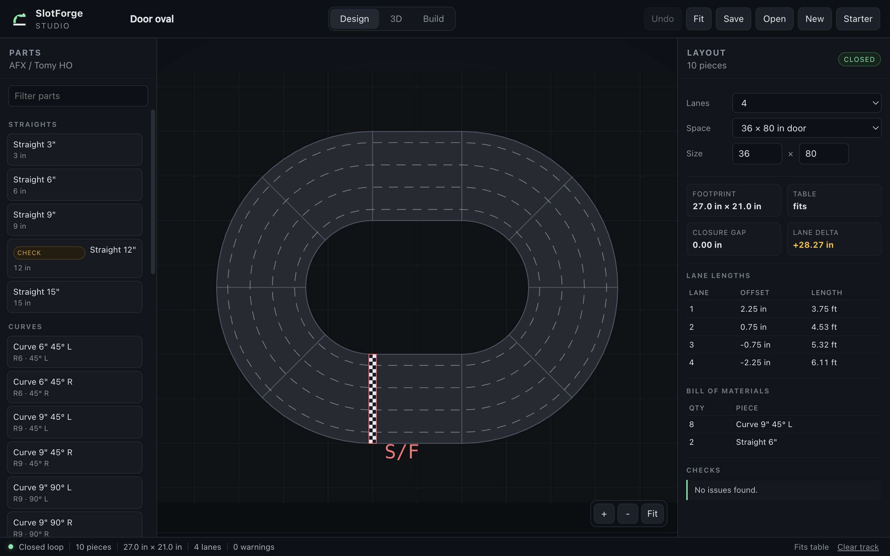
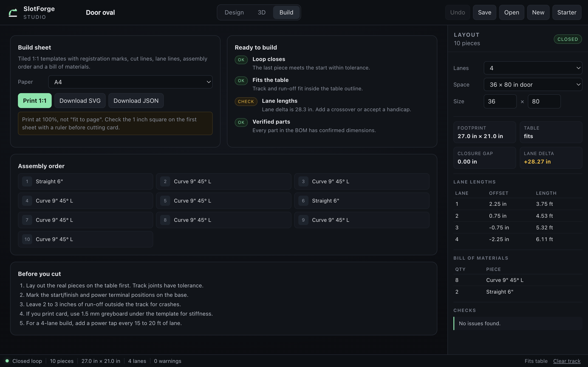
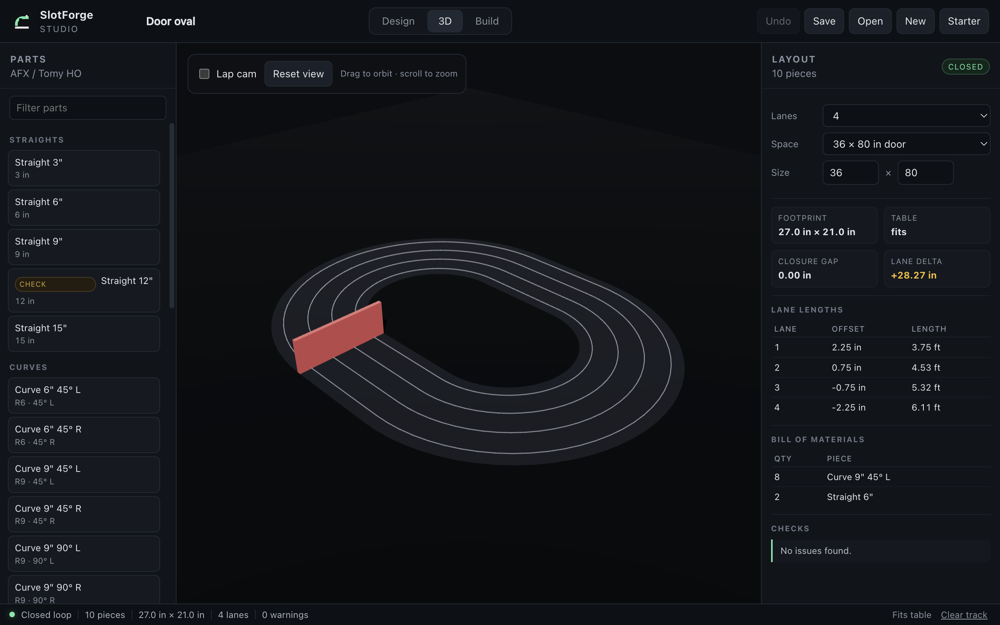

Real AFX parts
3-inch sections, 1.5-inch lane spacing, 6 to 18 inch radii, 45 and 90 degree sweeps, banked curves. Parts are marked verified or check against your stock.
AFX-compatible · open source
SlotForge places real AFX pieces with real geometry, then tells you the truth: closure gap, lane lengths, BOM and table fit. Preview it in 3D. Print it at 1:1. Race it on Friday.

Closed loop · 0.00 in gap · 27 × 21 in · 8 curves + 2 straights
The trap
Fixed pieces make it easy to draw a pretty oval and hard to draw a fair one. The starter door oval closes perfectly. Its four lanes are 3.75, 4.53, 5.32 and 6.11 ft. The outside lane is 28.27 in longer than the inside.
SlotForge reports the delta before you cut card or order parts. The fix is a crossover, a handicap, or a different layout. The tool's job is to tell you which, not to hide the number.
Open the sample in the designer →Measured by the same geometry engine that draws the layout and the print sheet.
What it does
No freehand curves that cannot be bought. No dimensions that only work on screen. Every piece is a real part with a real footprint.
3-inch sections, 1.5-inch lane spacing, 6 to 18 inch radii, 45 and 90 degree sweeps, banked curves. Parts are marked verified or check against your stock.
Each piece starts where the last one ended. The closing gap and heading error are measured and shown as a red line, not rounded away.
Per-lane length, offset and the difference between the fastest and slowest lane. The number that decides whether the race is fair.
Orbit the whole layout, then ride lane 1 at speed. Banking is modelled on banked pieces. Orbit, zoom and reset the view.
Tiled A4 or Letter pages at 1:1 with registration marks, cut lines, lane lines, BOM and assembly order. Print at 100% and check the ruler square.
Balanced heats, lane rotation, points and standings. Every driver runs every lane. Manual results today, IR timing next.

From screen to table
The build sheet is the same geometry as the editor. It tiles across pages, adds registration marks, numbers every piece and lists the order to lay them down. The first page carries the checks.
3D preview
The 3D view uses the same track file. Orbit the layout, check the footprint, or switch to lap cam and take a lap from the driver's seat. Banked pieces tilt the surface, not just the drawing.
No elevation or overpasses yet. That is on the roadmap, not in the current build.

Race night · beta
A separate race app turns the layout into a season: balanced heats, lane rotation, points and standings. Everyone runs every lane. The field splits evenly instead of filling one heat and stranding the rest.
Results live in your browser. No accounts, no cloud, no wifi required. Export the season as JSON when the night is over.
Manual finish order today. IR beam timing and a phone leaderboard are next.
Points: 10, 8, 6, 5, 4, 3, 2, 1. Ties by wins, then podiums.
The loop
Choose from the AFX library. Add straights, curves, banked sections and power.
Watch the gap and lane delta. Swap a curve until the numbers work.
Print a 1:1 sheet for card, or use the BOM to build with real track.
Run heats, rotate lanes and keep the standings in the race app.
Honest status
The designer and the race schedule work today. The vision service, fab CLI and measured piece library are scaffolds. The piece dimensions are seeded from published AFX data and must be checked against your own stock before you cut.
Read the roadmap →